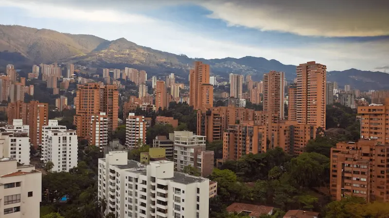

Medellín is my favorite city because it perfectly blends innovation, beauty, and culture. Nestled in a valley and surrounded by green mountains, it’s often called the “City of Eternal Spring” for its pleasant weather year-round. I love how the city is alive with creativity, from its vibrant art and music scene to its modern metro system and cable cars that connect the hillsides. The people of Medellín are welcoming and full of resilience, which makes the city feel inspiring and full of hope. Every visit reminds me why it’s a place I truly admire and enjoy.
